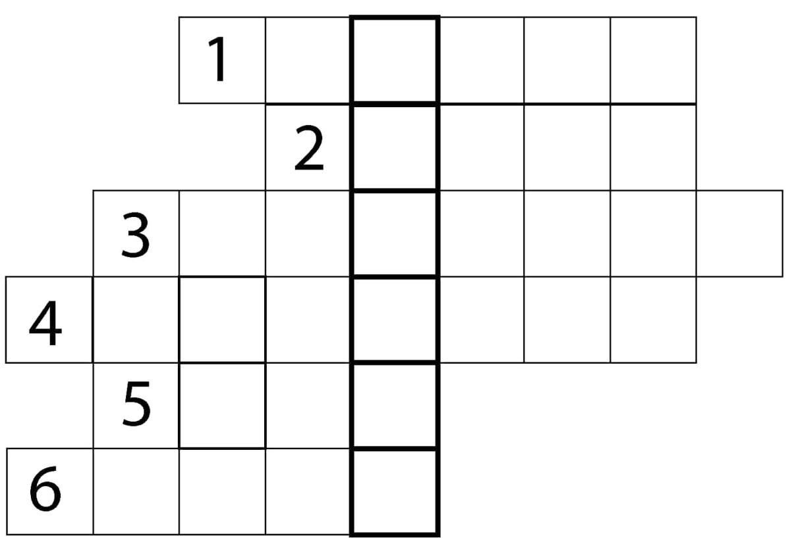
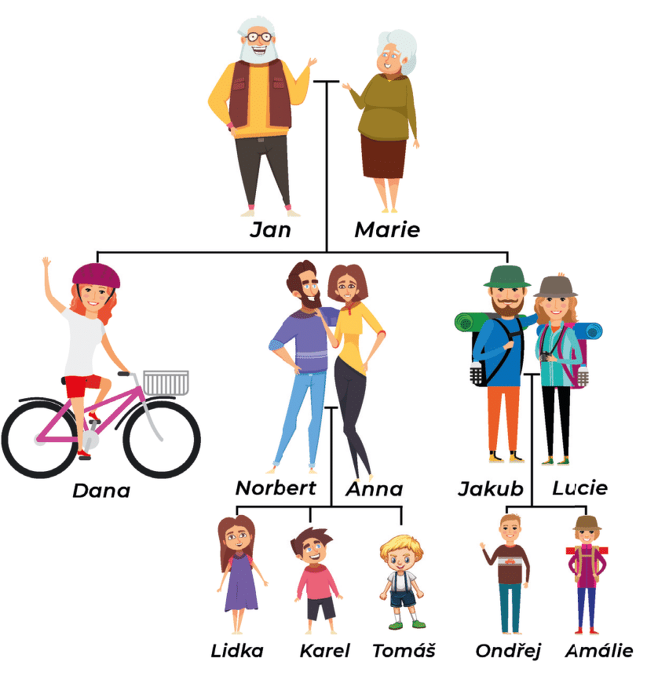

Pan Kubát je profesor na fakultě. Ted’ je ve třídě a vysvětluje novou gramatiku. Rád pracuje. Je to šťastný člověk. Má hezký byt, hodnou manželku, hezkou dceru a chytrého syna. Jeho manželka je ted’ doma. Taky pracuje, v nemocnici, ale ted’ je nemocná. Její práce je zajímavá. Jejich syn Tomáš je ještě ve škole. Je chytrý, dobře studuje. Má rád češtinu a angličtinu. Jejich dcera se jmenuje Jana, je to hezká dívka. Je prodavačka, prodává v obchodě. Ráda se dívá na televizi, ráda má taky kino a divadlo. Dnes prodává jen dopoledne, odpoledne má volno.
1.2. Listen to the audio file 2 times without looking at the text (train your listening comprehension)
2. Complete the crossword with family members and write the secret.
In case of need use dictionary link at the starting of unit.

1) Syn mého otce je můj … .
2) Manžel maminky je můj … .
3) Tatínek tatínka je můj … .
4) Maminka strýce je moje … .
5) Můj bratr je tatínkův … .
6) Sestra maminky je moje … .
3.1. Poslechněte si text a doplňte vynechaná slova. Then read the following text. Work with the text below.
Note: We recommend reading with a recording for correct reading. The goal is not to understand every word, but mainly the meaning of the text.
3.2. Vyberte správnou odpověď na následující otázky podle textu.
4. Podívejte se na rodokmen. Podle rodokmenu doplňte do vět vztahy příbuzných.
Poznámka: Vy jste Tomáš.

5.1. Přečtěte si následující text.
Text. Velká rodina.
Jmenuji se Karel a mám velkou rodinu. Moje maminka se jmenuje Bára. Tatínek se jmenuje Jan. Moje sestra Pavla ráda zpívá a tancuje. Chodí na gymnázium. Můj starší bratr Radek pracuje jako automechanik. Radek rád čte a kouká na televizi. Má dvě malé děti. Hanka je moje neteř a Martin synovec. Radkova manželka Gábina pracuje jako učitelka. Můj druhý bratr, který se jmenuje Petr, nemá žádnou práci. Naše babička Anna, tatínkova maminka, peče dobré koláče. Její manžel, dědeček Libor, sbírá známky. Oba moji rodiče mají sourozence — maminčin bratr Josef pracuje jako zubař. Tatínkova sestra Tereza je baletka a je svobodná.
5.2. Odpovězte na otázky. Pravda nebo lež? Odpovězte podle textu.